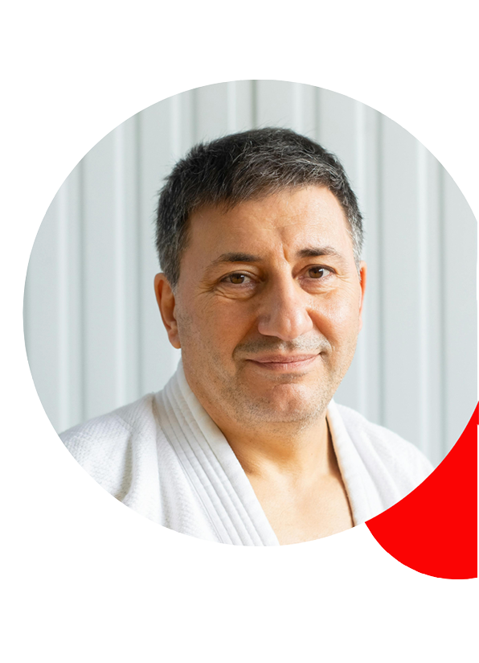

Karate
De stijl karate die bij de Benoordenhoutse Judoschool wordt beoefend is het karate-jitsu. Deze stijl gaat verder en
bevat meerdere technieken dan de oude stijlen zoals deze in Nederland worden gedoceerd. Het is een praktisch bruikbare
karate stijl die zich uitstekend leent voor hen die karate willen beoefenen op zowel recreatief- als wedstrijdniveau en
ook voor hen die karate willen beoefenen uit het oogpunt van zelfverdediging. Voorop staat het veilig en plezierig
trainen.
Lessen
Naast het trainen van techniek wordt ook aandacht besteed aan sociale vaardigheden. Karate is zowel aan aanvallende als
een verdedigende sport zodat men zich middels wedstrijden met anderen kan meten.
Er wordt een opleidingsprogramma aangeboden waarin de oefenstof is verdeeld over diverse graduaties. Iedere hogere,
landelijk erkende, graad tot en met de bruine band kan men behalen door het met goed gevolg afleggen van een
vaardigheidsexamen binnen de eigen school, door onze rijkserkende examinatoren. Bij de Benoordenhoutse Judoschool zijn
de leraren rijks gediplomeerd en beschikken over een ruime ervaring op het gebied van lesgeven.
Dan-examens vinden regionaal plaats op voordracht van onze eigen leraren.
De lessen staan onder leiding van Theo van Pomeren, 8e dan karate-jitsu.
Voor de exameneisen karate, zie deze link
Leraar Theo
Hoi allemaal, karatekanjers! Ik hoop dat jullie klaar zijn voor een nieuwe en opwindende les vol energie en discipline.
Voor degenen die me nog niet kennen, mijn naam is John en ik ben jullie instructeur voor vandaag. Net als jullie, ben ik
hier om te leren en te groeien in deze prachtige discipline die karate is. Laten we samen werken aan onze technieken,
ons karakter versterken en vooral plezier hebben tijdens deze les. Dus, zet je schrap voor een avontuur vol
zelfontdekking en karatekicks! Osu!
